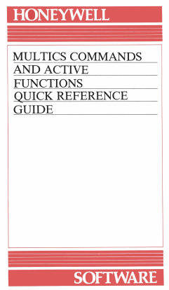

Working with a text-based Command Line Interface (CLI), without a GUIGraphical User InterfaceGraphical User Interface can be intimidating at first glance, as most of us are accustomed to using a GUIGraphical User InterfaceGraphical User Interface. But understanding it will show how powerful and efficient it is. Here is a simple example.
Most senior programmers in the industry and veteran Linux system administrators will exclusively use
CLICommand-Line InterfaceA software mechanism you use to interact with your operating
system using your keyboard as their day to day interaction with the computer. The reason
is, the GUIGraphical User InterfaceGraphical User Interface was designed for simplifying
human interaction with computers rather than improving the computer’s efficiency at doing
tasks.
The goal of this chapter aims to introduce the fundamentals of working with the
-
Work on what the command line is and how it works,
-
Look at working with files and folders,
-
How Linux protects files from unauthorised access with permissions,
-
Common commands to be familiar with and how to connect commands together with pipes,
-
Introduction to some complex command line tasks.
This part of the lectureBook aims to give practical knowledge on working with the widely
used Bash shell, in case you choose to extend your learning into user management, network
configuration, programming and development, system administration, or if you catch the
tinkerer-bug.
The history of computer OSOperating SystemOperating System starts in the 1950s, with simple
schemes for running batch programs efficiently,
Then, in early 1960s, interactive use started to gain ground. Not only interactive use, but having several people use the same computer at the same time, from different terminals which were called

Multics Commands reference manual which was quite innovative at the time. It had, for example, a hierarchical file system, something taken for granted in modern OSOperating SystemOperating Systems. The Multics project did not, however, progress very well. It took years longer to complete than anticipated and never got a significant share of the OSOperating SystemOperating System market. One of the participants, Bell Labs, withdrew from the project. The Bell Labs people who were involved then made their own operating system and called it Unix. Unix was originally distributed for free and gained much popularity in universities. Later, it got an implementation of the TCP/IP protocol stack and was adopted as the OSOperating SystemOperating System of choice for early workstations. By 1990, Unix had a strong position in the server market and was especially strong in universities. Most universities had Unix systems and computer science students were exposed to them. Many of them wanted to run Unix on their own computers as well. Unfortunately, by that time, Unix had become commercial and rather expensive. About the only cheap option was Minix, a limited Unix-like system written by Andrew Tanenbaum for teaching purposes. There was also 386BSD, a precursor NetBSD, FreeBSD, and OpenBSD, but that wasn’t mature yet, and required higher end hardware than many had at home. Into this scene came Linux, in October, 1991. Linus Torvalds, the author, had used Unix at the University of Helsinki, and wanted something similar on his PC at home. Since the commercial alternatives were way too expensive, he started out with Minix, but wanted something better and soon started to write his own operating system. After its first release, it soon attracted the attention of several other hackers. While Linux initially was not really useful except as a toy, it soon gathered enough features to be interesting even for people uninterested in operating system development. Linux itself is only the kernel of an operating system. The kernel is the part that makes all other programs run. It implements multitasking, and manages hardware devices, and generally enables applications to do their thing. All the programs that the user (or system administrator) actually interacts with are run on top of the kernel. Some of these are essential: for example, a command line interpreter (or shell), which is used both interactively and to write shell scripts (corresponding to .BAT files). Linus did not write these programs himself, and used existing free versions instead. This reduced greatly the amount of work he had to do to get a working environment. In fact, he often changed the kernel to make it easier to get the existing programs to run on Linux, instead of the other way around. Most of the critically important system software, including the C compiler, came from the Free Software Foundation’s GNU project. Started in 1984, the GNU project aims to develop an entire Unix-like operating system that is completely free. To credit them, many people like to refer to a Linux system as a GNU/Linux system. (GNU has their own kernel as well.) During 1992 and 1993, the Linux kernel gathered all the necessary features it required to work as a replacement for Unix workstations, including TCP/IP networking and a graphical windowing system (the X Window System). Linux also received plenty of industry attention, and several small companies were started to develop and distribute Linux. Dozens of user groups were founded, and the Linux Journal magazine started to appear in early 1994. Version 1.0 of the Linux kernel was released in March, 1994. Since then, the kernel has gone through many development cycles, each culminating in a stable version. Each development cycle has taken a year or three, and has involved redesigning and rewriting large parts of the kernel to deal with changes in hardware (for example, new ways to connect peripherals, such as USB) and to meet increased speed requirements as people apply Linux to larger and larger systems (or smaller and smaller ones: embedded Linux is becoming a hot topic).From a marketing and political point of view, after the 1.0 release the next huge step happened in 1997, when Netscape decided to release their web browser as free software. (...) the term “open source” was created for this This was the occasion that first brought free software to the attention of the whole computing world for the time. It has taken years of work since then, but free software (...) or open source. has become not only generally accepted but also often the preferred choice for many applications.
Social Phenomenon
Apart from being a technological feat, Linux is also an interesting social phenomenon. Much through Linux, the free software movement has broken through to general attention. On the way, it even got an informal marketing department and brand:
It is baffling to many outsiders that something as successful as Linux could be developed by a bunch of unorganized people in their free time. The major factor here is the availability of all the source code to the system, plus a copyright license which allows modifications to be made and distributed. When the system has many programmers among its users, if they find a problem, they can fairly easily fix it. Additionally, if they think a feature is missing, they can add it themselves. For some reason, that is something programmers like to do, even if they’re not paid for it: they have an itch (a need), so they scratch (write the code to fill the need). It is necessary to have at least one committed developer who puts in lots of effort. After a while, however, once there are enough programmer-users sending small changes and improvements, you get a snowball effect: lots of small changes result in a fairly rapid total development speed, which then attracts more users, some of which will be programmers. This then results in more small changes and improvements sent in by users, and so on. For operating system development specifically, this large group of programmer-users results in two important types of improvements: bug fixes and device drivers. Operating system code often has bugs that only occur rarely and it can be difficult for the developers to reproduce them. When there are thousands or more users who are also programmers, this results in a very effective testing and debugging army. Most of the code volume in Linux is device drivers. The core functionality, which implements multitasking and multiuser functionality, is small in comparison. Most device drivers are independent from each other, and only interact with the operating system core via well defined interfaces. Thus, it is fairly easy to write a new device driver without having to understand the whole complexity of the operating system. This also allows the main developers to concentrate on the core functiionality, and they can let those people write the device drivers who actually have the devices. It would be awkward just to store the thousands of different sound cards, Ethernet cards, IDE controllers, motherboards, digital cameras, printers, and so on that Linux supports.
The Linux development model is distributed, and spreads the work around quite effectively.
The Linux model is not without problems. When a new device gets on the market, it can take a few months before a Linux programmer is interested enough to write a device driver. Also, some device manufacturers, for whatever reason, do not want to release programming information for their devices, which can prevent a Linux device driver to be written at all. Luckily, with the growing global interest in Linux such companies become fewer in numbers.

The CLICommand-Line InterfaceA software mechanism you use to interact with your operating system using your keyboard came from a form of dialogue by humans over teleprinter (TTY) machines, in which human operators remotely exchanged information instead of a human communicating with another human over a teleprinter. Early computer systems often used teleprinter machines as the means of interaction with a human operator.
The computer became one end of the human-to-human teleprinter model.
The mechanical teleprinter was then replaced by a terminal, a keyboard and screen emulating the teleprinter. Smart terminals permitted additional functions, such as cursor movement over the entire screen, or local editing of data on the terminal for transmission to the computer.

As the microcomputer revolution replaced the traditional systems, hardware terminals were replaced by
terminal emulators - PCPrincipal ComponentPrincipal Component software that interpreted terminal
signals sent through the PCPrincipal ComponentPrincipal Component’s serial ports. These
were typically used to interface an organisation’s new PCPrincipal ComponentPrincipal
Component’s with their existing mini- or mainframe computers, or to connect PCPrincipal
ComponentPrincipal Component to PCPrincipal ComponentPrincipal Component. Some of
these PCPrincipal ComponentPrincipal Components were running Bulletin Board System
software.
Early operating system CLICommand-Line InterfaceA software mechanism you use to interact with
your operating system using your keyboards were implemented as part of resident monitor programs,
and could not easily be replaced. The first implementation of the

{kind=link}
{kind=link}
The Bourne shell led to the development of the KornShell (ksh), Almquist shell (ash), and the popular
Bourne-again shell (or bash). Early microcomputers themselves were based on a CLICommand-Line
InterfaceA software mechanism you use to interact with your operating system using your keyboard
such as CP/M, DOS or AppleSoft BASIC. During the 1980s and 1990s, the introduction of the
Apple Macintosh and of Microsoft Windows on PCs saw the command line interface as
the primary user interface replaced by the Graphical User Interface. The command line
remained available as an alternative user interface, often used by system administrators
and other advanced users for system administration, computer programming and batch
processing.
Shells in other Operating Systems
- Windows
-
In November 2006, Microsoft released version 1.0 of Windows PowerShell, which combined features of traditional Unix shells with their proprietary object-oriented .NET Framework. MinGW and Cygwin are open-source packages for Windows that offer a Unix-like CLI. Microsoft provides MKS Inc.’s ksh implementation MKS Korn shell for Windows through their Services for UNIX add-on.
- Macintosh
-
Since 2001, the Macintosh operating system macOS has been based on a Unix-like operating system called Darwin. On these computers, users can access a Unix-like CLICommand-Line InterfaceA software mechanism you use to interact with your operating system using your keyboard by running the terminal emulator program called Terminal, or by remotely logging into the machine using
ssh . Z shell is the default shell for macOS, (...) This was implemented as of macOS Catalina. withbash,tcsh, and the KornShell also provided.Before macOS Catalina, bash was the default shell.
A Brief Description of What Linux Does
Linux is a general purpose computer operating system, originally released in 1991 by Linus Torvalds
and began as a personal project of him [†]Koren, O. A study of the Linux kernel evolution. ACM
SIGOPS Operating Systems Review 40, 110–112 (2006). It was to create a new  The
MINIX logo. There were alternative OSs on the market such as MINIX but it was under a
proprietary license which was later became open-source in 2000. This was one of the reasons why
Linux was attempted in the first place. To create a truly open-source implementation of
UNIX.
The
MINIX logo. There were alternative OSs on the market such as MINIX but it was under a
proprietary license which was later became open-source in 2000. This was one of the reasons why
Linux was attempted in the first place. To create a truly open-source implementation of
UNIX.
Linux is defined by its kernel, called the Linux kernel, which is the core component of the system. This kernel interacts with the computer hardware to allow software and other hardware to exchange information, which you can see in Fig. 2.5.
Imagine the kernel as the middle-man between your software and the hardware. This allows you to write a program without worrying to much about what the hardware is.
As Linux is an open-source project and is probably one of the greatest collaborative software work in
history, it has a rich history. It was inspired by MINIX which, in turn, was inspired by UNIX with
UNIX being the first
Open Source v. Closed Source
In programming there are two (
-
It can be closed source, which means, you are not allowed to edit the code the program is running on,
-
Open source which you are free to edit and share the code as you see fit.
Linux is based on a philosophy of software and operating systems being free.
The software license which allows this, in the case of the Linux kernel, is called the GNU General Public License. (...) are a series of widely used free software licenses, or copyleft licenses, that guarantee end users the freedoms to run, study, share, or modify the software. This emphasis of freedom, both, of cost and modification has helped Linux to become popular for many different applications and purposes from tinkering programming to being used in massive databases of major companies.
Linux has popped up everywhere from the majority of the servers that run web services we all use, to super computers, to Wi-Fi routers, in cars, mobile phones, and everywhere in between. Odds are that you are closed to a device that uses some part of the Linux kernel. In the midst of all these different kinds of Linux installations, the most important distinction you’ll need to be aware of is one of the genealogy of Linux.
While the Linux kernel is more or less the same across nearly all installations of Linux, the software
that surrounds the kernel that provides capabilities like
{kind=link}
| Distribution | Advantages | Disadvantages |
| Linux Mint | Superb collection of custom tools developed in-house, hundreds of user-friendly enhancements, inclusion of multimedia codecs, open to users’ suggestions | The project does not issue security advisories |
| Ubuntu | Fixed release cycle and support period; long-term support (LTS) variants with five years of security updates; novice-friendly; wealth of documentation, both official and user-contributed | Lacks compatibility with Debian; frequent major changes tend to drive some users away; non-LTS releases come with only nine months of security support |
| Arch Linux | Excellent software management infrastructure; unparalleled customisation and tweaking options; superb on-line documentation | Occasional instability and risk of breakdown |
| Gentoo | Highly flexible, endlessly customizable, able to use a range of compile-time configurations, init systems and run on many architectures | Requires a higher degree of knowledge to use, upgrading packages via source can be time consuming |
| Slackware Linux | Considered highly stable, clean and largely bug-free, strong adherence to UNIX principles | Limited number of officially supported applications; conservative in terms of base package selection; complex upgrade procedure |
| Debian | Very stable; remarkable quality control; includes over 30,000 software packages; supports more processor architectures than any other Linux distribution | Conservative - due to its support for many processor architectures, newer technologies are not always included; slow release cycle (one stable release every 2 - 3 years); discussions on developer mailing lists and blogs can be uncultured at times |
| Fedora | Highly innovative; outstanding security features; large number of supported packages; strict adherence to the free software philosophy; availability of live spins featuring many popular desktop environments | Fedora’s priorities tend to lean towards enterprise features, rather than desktop usability; some bleeding edge features, such as switching early to KDE 4 and GNOME 3, occasionally alienate some desktop users |
| openSUSE | Comprehensive and intuitive configuration tool; large repository of software packages, excellent web site infrastructure and printed documentation, Btrfs with boot environments by default | Its resource-heavy desktop setup and graphical utilities are sometimes seen as “bloated and slow” |
| Red Hat | Long-term, commercial support of ten years or more. Stability. | Lacks latest Linux technologies; small software repositories; licensing restrictions |
| FreeBSD | Fast and stable; availability of over 24,000 software applications (or "ports") for installation; very good documentation; native ZFS support and boot environments | Tends to lag behind Linux in terms of support for new and exotic hardware, limited availability of commercial applications; lacks graphical configuration tools |
Depending the readers future work or study area, it is likely to end up learning to use the command line on a system that inherits from one of these distributions. Most likely, it will be a distribution derived from Debian or Red Hat. Linux Mint, Ubuntu, Elementary OS, and Kali Linux are all derived from Debian. CentOS, Fedora, and Red Hat Enterprise Linux are derived from Red Hat.
The history of all of these different distributions of Linux is beyond the scope of this document. But, what this means at its core is the need to be aware of what system is in use and the need to adapt to account for differences in distributions. As we begin working with Linux, through the command line, it will be apparent, most of what can be done is the same across the major distributions.